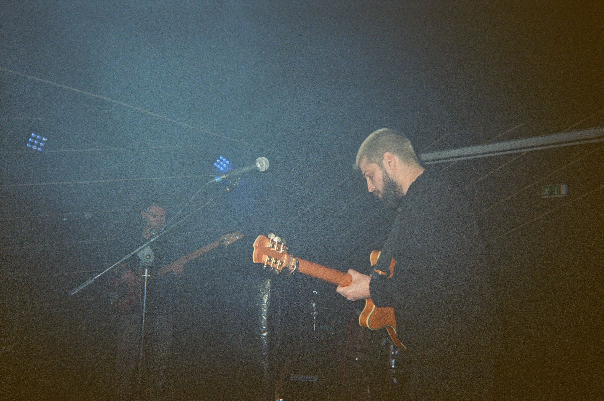

Showcasing independent artists on international stages.
For booking & inquiries: greenglassbooking@gmail.com
Showcasing independent artists on international stages.
For booking & inquiries: greenglassbooking@gmail.com

alt-soul · jazz · folk
Vancouver-based alt-soul artist Matt Storm is known for his emotionally rich live performances, blending soul, jazz, and folk with a modern edge. Raised across the globe and now rooted on Canada's West Coast, Matt found refuge in music from an early age — a passion that shaped his sound and storytelling.
Since releasing his 2018 debut EP Major 7th Medicine, Matt has become a fixture in the Vancouver indie scene, performing solo and with his band at festivals like Rifflandia and Mural Fest. His breakout single "We Went Our Own Ways" garnered over 2 million streams and expanded his reach internationally, leading to sold out tour dates in Europe.
Booking & inquiries
greenglassbooking@gmail.com